Environmental Movements: Grassroots Ecology & Citizen Action
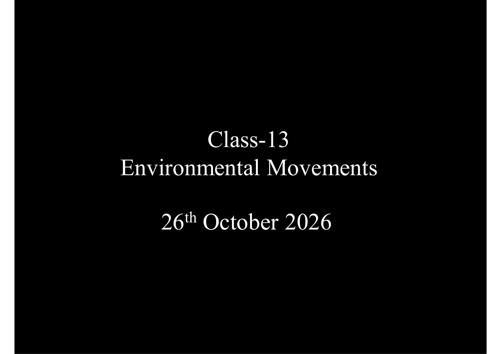
Grassroots Environmental Movements in India
- •Class-13 Environmental Movements 26th October 2026
Grassroots Environmental Movements in India: Class-13 Environmental Movements 26th October 2026. This material establishes quantitative limits, operational trade-offs, and core exam principles for Lecture 13.
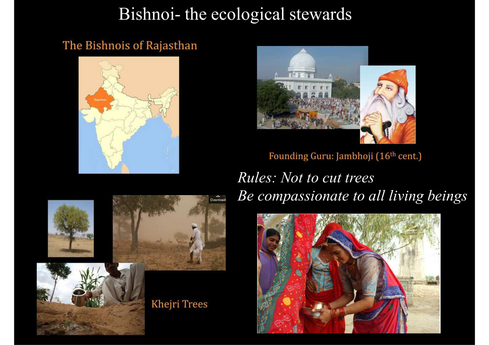
Bishnoi- the ecological stewards
- •Bishnoi- the ecological stewards Rules: Not to cut trees Be compassionate to all living beings
The Bishnoi community of Rajasthan sacrificed 363 lives in 1730 led by Amrita Devi to protect sacred Khejri (Prosopis cineraria) trees from the Maharaja of Jodhpur's axemen. Founded by Guru Jambheshwar in the 15th century with 29 rules protecting green trees and wildlife, the Bishnois established India's first recorded grassroots conservation movement.
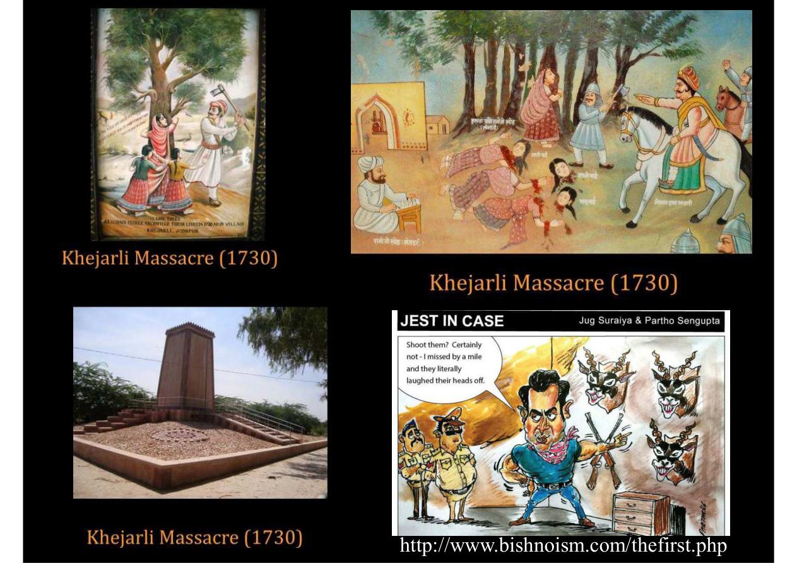
Historical Chronology of Community Ecological Struggles
Visual figure slide. See the high-resolution render on the left.
Historical Chronology of Community Ecological Struggles illustrates key empirical observations and visual relationships in Lecture 13. It provides field data, case evidence, or system diagrams that support the quantitative and regulatory concepts taught in this topic.
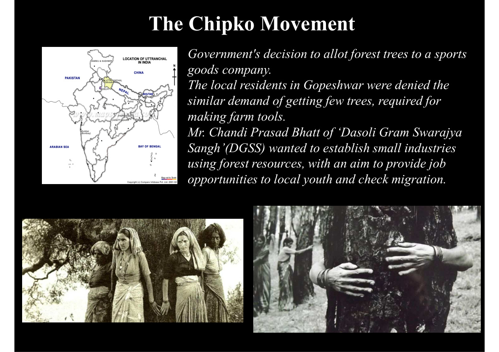
The Chipko Movement
- •The Chipko Movement Government's decision to allot forest trees to a sports goods company. The local residents in Gopeshwar were denied the
The Chipko Movement started in the 1970s in the Garhwal Himalayas of Uttarakhand (Reni village). When the state forest department allotted ash trees to a commercial sports goods manufacturer while banning local agricultural use, rural women led by Gaura Devi, Sunderlal Bahuguna, and Chandi Prasad Bhatt hugged trees to halt commercial felling. The struggle forced a 15-year logging ban across Himalayan catchment forests.
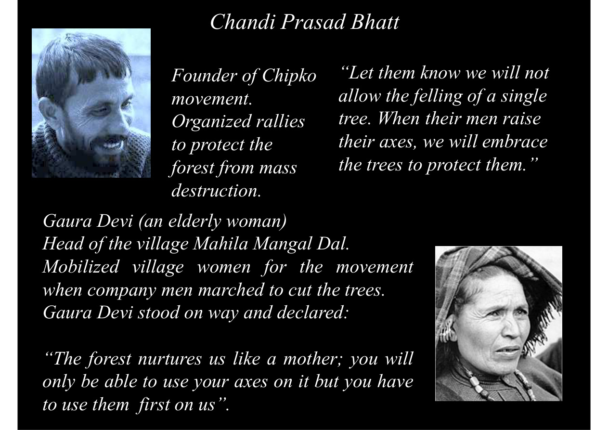
Founder of Chipko
- •Founder of Chipko movement. Organized rallies to protect the
The Chipko Movement started in the 1970s in the Garhwal Himalayas of Uttarakhand (Reni village). When the state forest department allotted ash trees to a commercial sports goods manufacturer while banning local agricultural use, rural women led by Gaura Devi, Sunderlal Bahuguna, and Chandi Prasad Bhatt hugged trees to halt commercial felling. The struggle forced a 15-year logging ban across Himalayan catchment forests.
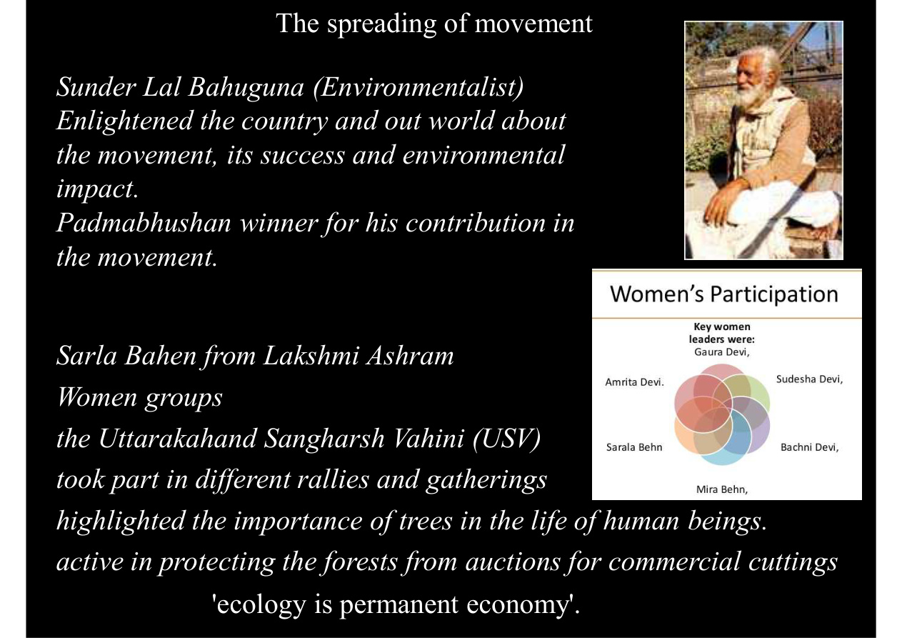
The spreading of movement
- •The spreading of movement Sunder Lal Bahuguna (Environmentalist) Enlightened the country and out world about the movement, its success and environmental
The Chipko Movement started in the 1970s in the Garhwal Himalayas of Uttarakhand (Reni village). When the state forest department allotted ash trees to a commercial sports goods manufacturer while banning local agricultural use, rural women led by Gaura Devi, Sunderlal Bahuguna, and Chandi Prasad Bhatt hugged trees to halt commercial felling. The struggle forced a 15-year logging ban across Himalayan catchment forests.
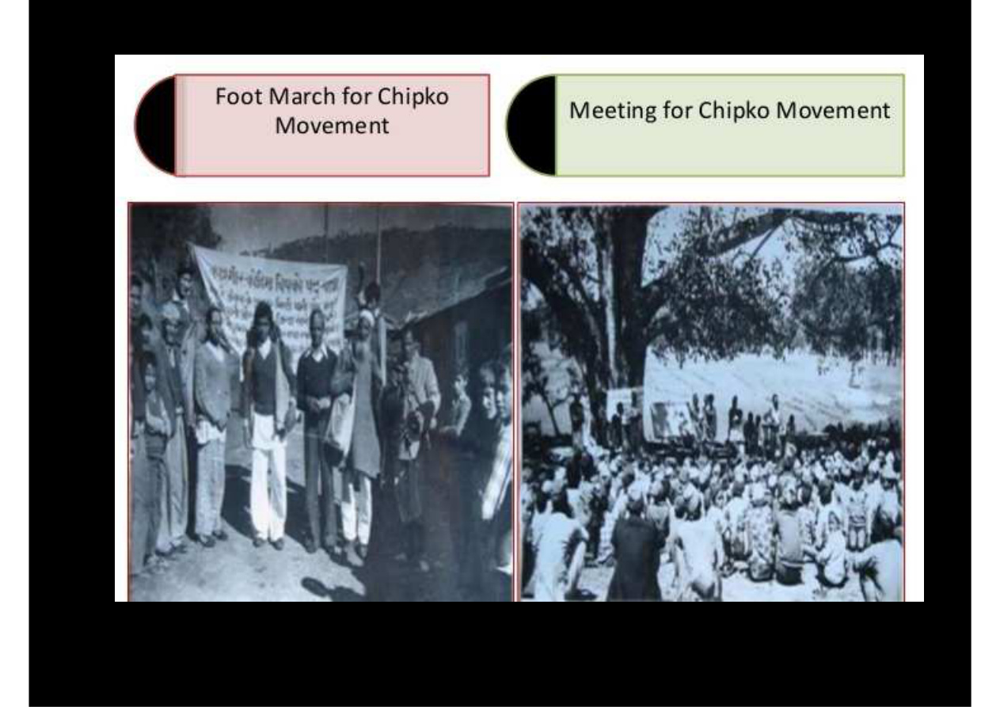
Slide 7
Visual figure slide. See the high-resolution render on the left.
Lecture 13 figure 7 illustrates key empirical observations and visual relationships in Lecture 13. It provides field data, case evidence, or system diagrams that support the quantitative and regulatory concepts taught in this topic.
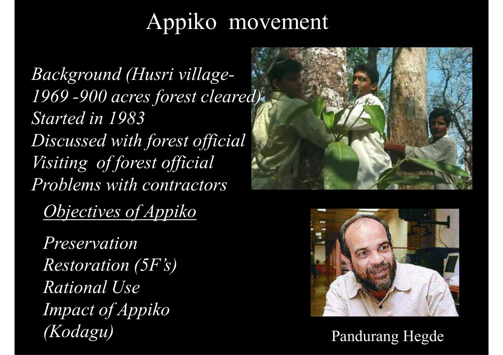
Appiko movement
- •Appiko movement Objectives of Appiko Preservation Restoration (5F’s)
The Appiko Movement began in September 1983 in Salkani, Uttara Kannada (Karnataka) as the southern counterpart to Chipko. Villagers hugged trees to stop commercial clear-cutting of moist tropical forests in the Western Ghats. Appiko organized around three principles: Ubbesu (save), Belessu (grow), and Balesu (rational use), focusing on the 5 Fs of subsistence: food, fodder, fuel, fertilizer, and fiber.
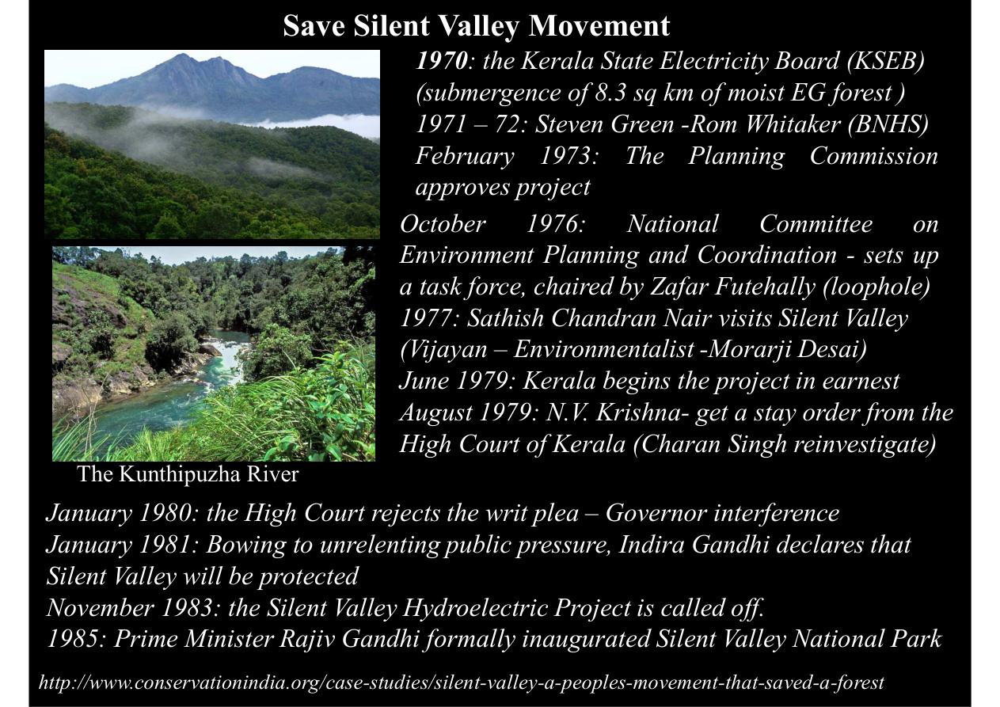
The Kunthipuzha River
- •The Kunthipuzha River 1970: the Kerala State Electricity Board (KSEB) (submergence of 8.3 sq km of moist EG forest ) 1971 – 72: Steven Green -Rom Whitaker (BNHS)
The Save Silent Valley struggle (1970s–1980s) in Palakkad, Kerala stopped a 120 MW hydroelectric dam across the Kunthipuzha River that would have submerged 8.3 sq km of undisturbed tropical evergreen rainforest. Scientific surveys demonstrating that the valley was a critical refuge for the endangered Lion-tailed Macaque led the central government to scrap the dam and designate Silent Valley National Park in 1984.
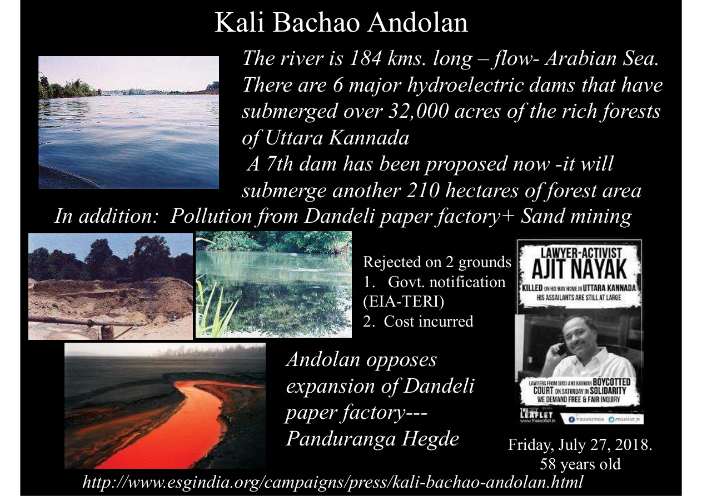
Kali Bachao Andolan
- •Kali Bachao Andolan The river is 184 kms. long – flow- Arabian Sea. There are 6 major hydroelectric dams that have submerged over 32,000 acres of the rich forests
Kali Bachao Andolan: Kali Bachao Andolan The river is 184 kms. long – flow- Arabian Sea. There are 6 major hydroelectric dams that have submerged over 32,000 acres of the rich forests. This material establishes quantitative limits, operational trade-offs, and core exam principles for Lecture 13.
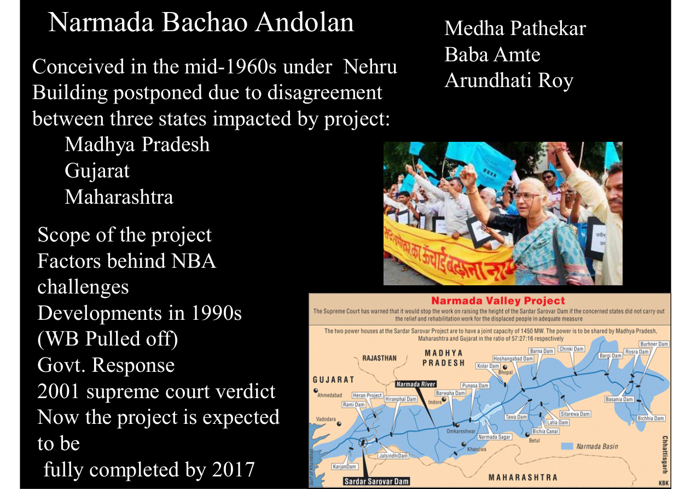
Narmada Bachao Andolan
- •Narmada Bachao Andolan Conceived in the mid-1960s under Nehru Building postponed due to disagreement between three states impacted by project:
The Narmada Bachao Andolan (NBA), founded in 1985 by Medha Patkar and Baba Amte, opposed large dams along the Narmada river, focusing on the Sardar Sarovar Project. The campaign challenged large-scale river engineering by documenting the displacement of over 250,000 predominantly tribal residents without adequate rehabilitation, fertile valley submergence, and flawed cost-benefit estimates.
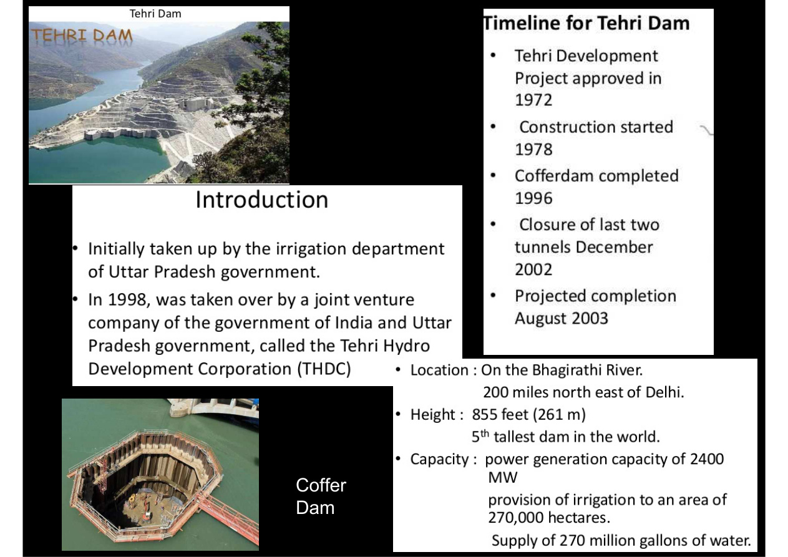
Coffer
- •Coffer Dam
Coffer illustrates key empirical observations and visual relationships in Lecture 13. It provides field data, case evidence, or system diagrams that support the quantitative and regulatory concepts taught in this topic.
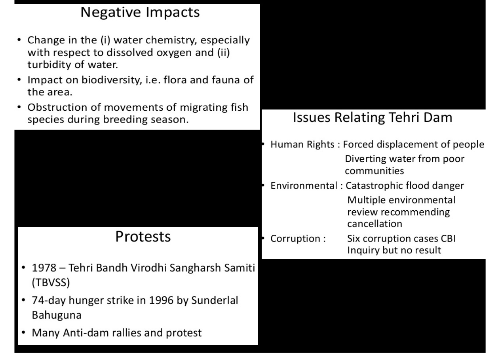
Slide 13
Visual figure slide. See the high-resolution render on the left.
Lecture 13 figure 13 illustrates key empirical observations and visual relationships in Lecture 13. It provides field data, case evidence, or system diagrams that support the quantitative and regulatory concepts taught in this topic.
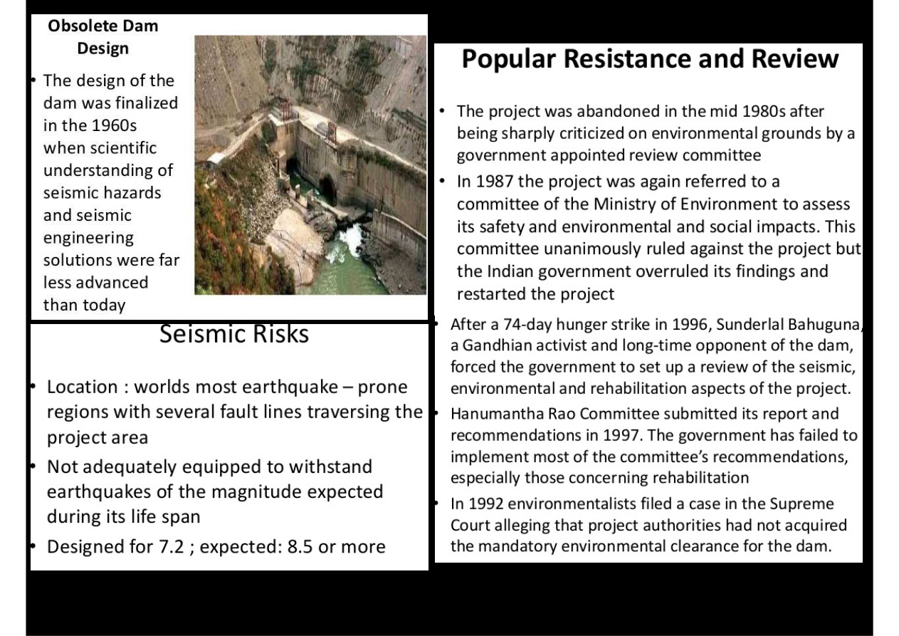
Slide 14
Visual figure slide. See the high-resolution render on the left.
Lecture 13 figure 14 illustrates key empirical observations and visual relationships in Lecture 13. It provides field data, case evidence, or system diagrams that support the quantitative and regulatory concepts taught in this topic.
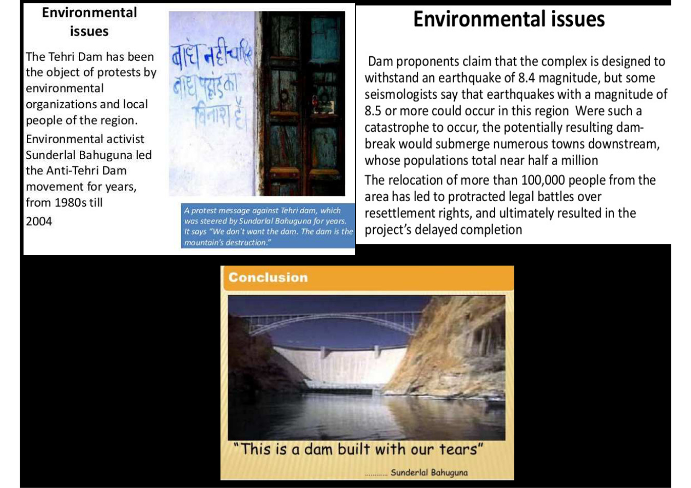
Slide 15
Visual figure slide. See the high-resolution render on the left.
Lecture 13 figure 15 illustrates key empirical observations and visual relationships in Lecture 13. It provides field data, case evidence, or system diagrams that support the quantitative and regulatory concepts taught in this topic.
Hydroelectric Dam Submergence vs Ecological Valuation
Simulate the techno-ecological conflict of large river valley projects. Adjust dam reservoir height to observe installed hydroelectric capacity, forest submergence area, displaced population, and the environmental resistance index.
Active recall flashcards
Review definitions, reactions, and governing laws from the lecture slides before flipping.
Exam traps and common pitfalls
Common student misconceptions and subtle distinctions tested in exams.
- Exam trap: Confusing Chipko (Uttarakhand Himalayas, Hindi) with Appiko (Western Ghats Karnataka, Kannada). Appiko was inspired by Chipko a decade later in 1983.
- Exam trap: Assuming Silent Valley was fought for human displacement. Unlike Narmada, Silent Valley had no human settlement; it was fought purely for ecological and genetic biodiversity preservation.
- Exam note: Be prepared to list the 5 Fs of the Appiko movement and identify the Kunthipuzha River as the contested watercourse in Silent Valley.
Concept check quiz
Verify your understanding of core concepts from this lecture deck.
Slide reference gallery
Complete visual reference of all 15 slides with direct links to original presentation files.